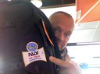

Resor · 2010-10-04 @ 16:28:26 Allmänt Permalink
4 okt Arlanda


Planerat länge, det vet ju alla, jag gillar att prata och vill ju få idéer om saker. Som att man hänger det tunga runt halsen eller lägger det i fickorna före check in! Eller att det finns microfiberhanddukar!
Jag trodde jag planerat i 10år, sen jag tog dykcert. Varenda elev vet väl att jag varit på väg till asien för att dyka! Men när jag packade lägenheten hittade jag ett 30 år gammalt papper där det står att mitt drömliv är med en ryggsäck på resande fot! Tänk vad jag visste, och glömt. På nåt sjukt vis får jag väl ändå vara tacksam för det som hänt på skolan som dödat all vilja att vara kvar, så jag äntligen kom iväg. *Ett försiktigt Tjo!*
Parkerar bilen, ställer in "torrbollen" och hinken med ättiksprit i bilen (återigen dessa bra tips jag fått) och drar över "kapellet". Som direkt blåser bort! Tack för det Biltema (dåligt tips, välj en presenning istället). Det är ett (j-a) dammskydd för inomhusbruk! Försöker med silvertejp få det att hänga kvar, det regnar ju in vid ena dörren. Nu ser bilen ut som en julgran pyntad av en blind treåring.
Taxi 020 till Arlanda. Förhör mig om reglerna och jobbet som chaffis, allt är ju möjligt numera när jag inte är lärare med fast anställning. Taxi på sommarnätterna, ja kanske det! På vägen till ARN frågar en vän i ett sms om jag vill ha skjuts. Hm, jo.. jag kunde ju frågat, men inte jag inte. Kan själv. 275 kr kostade det.
26 kg väger väskan, handbagaget på ryggen vill jag inte ens tänka på! Men det går bra till Bangkok (BKK) eftersom Turk Air tillåter 30 Det blir värre till Bali (DPS) då Jetair tar 20 efter specialbeställning. Var tusan ska jag göra av 6 kg!? Ha på mig BCD och våtdräkt eller? Kan ju se skumt ut.
Hur i hela friden kan det vara så sjukt dyrt inne i taxfree området? Eller jo, klart att konkurrensen är minimal, betalningsviljan hög, och stamgäster… nja. Men 109:- för en räkmacka är löjligt, tar en bulle för 10:- för det är nån bulldag eller nått. Bulldag! Intressant. Vem får igenom dessa dagar. "Kanelbullens dag". "Isterbandets dag"? Har Svenska Akademien en liten grupp för vad de 365 dagarna skall tillägnas? I så fall bör 'sylta' få 31 April.
Men jag gillar flygplatser, och alla andra knutpunkter för resande. Det är en plats av förväntan, flytt och frihetsgrader. Här finns världens alla platser med namn på tavlor. Det finns förbindelser till fascinerande platser! Avgångstavlan är som ett smörgåsbord av godsaker där jag stannar och drömmer en stund för att sen glädjas åt att jag faktiskt är på väg och vill njuta av det jag gör mer än drömma om det jag inte gör just nu. Bangkok i morrn. Here and now.
Jag bad om "gång", kanske till och med nödutgång om jag har tur! Att sitta innerst ger mig kvävningskänsla. Tänk OM jag måste på toa när de andra sover, bara tanken gör ju att det redan är kört. Möjligen kan det finnas ett lugn närmast fönstret, och knäna lever farligt vid gången när vagnarna far fram och tillbaka som skottspolar. Men, jag sitter vid gången när jag flyger, tack. Och inte längst fram/bak… och tvingas sova med toakön vaggandes mot mig, och alldeles för mycket information på molekylärinivå om vad de haft för sig.
Kanske ska lägga min tunga Aqualungeregulator i datorväskan!
Förresten tror jag att jag sträckte en muskel i ryggen när jag nös (av h-e) i morse.
Avslutar kaffe o bulle och strosar bort mot Gate 18 för att se vad de har för sig.
---